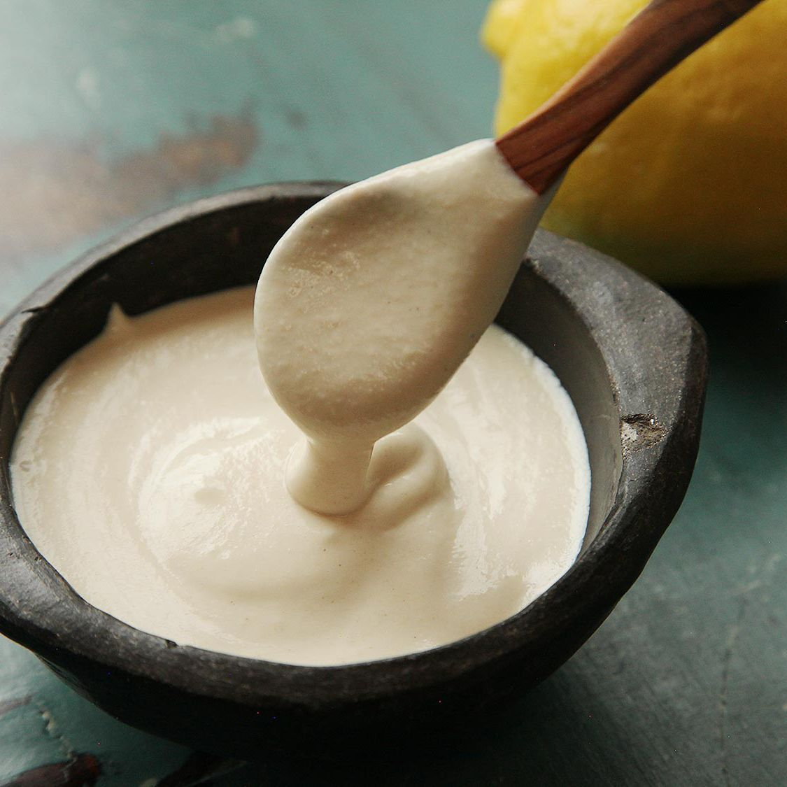

Tahini

Less expensive than storebought and easy too.
Very fast and easy to prepare and much less expensive than store-bought. This is one of the main ingredients for hummus
Ingredients
- 1 cup hulled sesame seeds
- 2 to 4 tbsp. vegetable oil (light olive oil or grame seed oil
Steps
- Cook sesame seeds on medium-low head in wide dry saucepan stirring constantly for 3 to 5 minutes, until seed are lightly colored. Be carfull to not over cook the seeds. If they turn brown they have been cooked too long.
- Let the toasted seeds cool completely and add them to a food processor or blender and process for about 1 minute or until you have a paste.
- Add 3 tbsp. of oil and process for another 2 to 3 minutes. If the tahini is gritty you may need to add more oil and process for another minutes
- Optional: add salt to taste and process for a few more seconds.
Back to Homepage